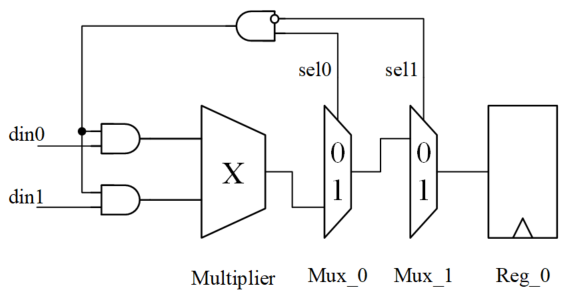

La siguiente tabla muestra el porcentaje de reducción de consumo de energía que se puede lograr en cada nivel del diseño digital. Después del nivel RTL, la cantidad de reducción de consumo ya es muy limitada.
| Nivel de diseño | Grado de mejora |
|---|---|
| Nivel de sistema | 50% ~ 90% |
| Nivel RTL | 20% ~ 50% |
| Nivel de compuertas | 10% ~ 15% |
| Nivel de transistores | 5% ~ 10% |
| Nivel de layout | < 5% |
Como un simple programador que escribe Verilog, también se puede participar en el trabajo de reducción de consumo a nivel de sistema, pero el enfoque principal debe estar en la reducción de consumo a nivel RTL.
A continuación, se dividirá en 2 secciones para presentar los métodos comunes para reducir el consumo de energía a nivel RTL.
Paralelismo y pipeline
Para un módulo funcional, se puede implementar mediante paralelismo o mediante pipeline. Ambos métodos intercambian recursos por velocidad. El uso flexible de estos dos métodos en ciertas situaciones puede reducir el consumo de energía.
Procesamiento paralelo
El procesamiento paralelo puede ejecutar múltiples sentencias al mismo tiempo, lo que aumenta la eficiencia de ejecución. Por lo tanto, bajo la condición de cumplir con los requisitos de trabajo, el uso del procesamiento paralelo puede reducir la frecuencia de trabajo del sistema y disminuir el consumo de energía.
Por ejemplo, la descripción del código para implementar una operación de multiplicación y suma de 4 datos usando 1 multiplicador y 2 multiplicadores (en paralelo) es la siguiente:
Ejemplo
//1 multiplier, high speed
module mul1_hs
(
input clk , //200MHz
input rstn ,
input en ,
input [3:0] mul1 , //data in
input [3:0] mul2 , //data in
output dout_en ,
output [8:0] dout
);
reg flag ;
reg en_r ;
always @(posedge clk or negedge rstn) begin
if (!rstn) begin
flag <= 1'b0 ;
en_r <= 1'b0 ;
end
else if (en) begin
flag <= ~flag ;
en_r <= 1'b1 ;
end
else begin
flag <= 1'b0 ;
en_r <= 1'b0 ;
end
end
wire [7:0] result = mul1 * mul2 ;
// data output en
reg [7:0] res1_r, res2_r ;
always @(posedge clk or negedge rstn) begin
if (!rstn) begin
res1_r <= 'b0 ;
res2_r <= 'b0 ;
end
else if (en & !flag) begin
res1_r <= result ;
end
else if (en & flag) begin
res2_r <= result ;
end
end
assign dout_en = en_r & !flag ;
assign dout = res1_r + res2_r ;
endmodule
//===========================================
// 2 multiplier2, low speed
module mul2_ls
(
input clk , //100MHz
input rstn ,
input en ,
input [3:0] mul1 , //data in
input [3:0] mul2 , //data in
input [3:0] mul3 , //data in
input [3:0] mul4 , //data in
output dout_en,
output [8:0] dout
);
wire [7:0] result1 = mul1 * mul2 ;
wire [7:0] result2 = mul3 * mul4 ;
//en delay
reg en_r ;
always @(posedge clk or negedge rstn) begin
if (!rstn) begin
en_r <= 1'b0 ;
end
else begin
en_r <= en ;
end
end
// data output en
reg [7:0] res1_r, res2_r ;
always @(posedge clk or negedge rstn) begin
if (!rstn) begin
res1_r <= 'b0 ;
res2_r <= 'b0 ;
end
else if (en) begin
res1_r <= result1 ;
res2_r <= result2 ;
end
end
assign dout = res1_r + res2_r ;
assign dout_en = en_r ;
endmodule
La descripción del testbench es la siguiente.
Ejemplo
module test ;
reg rstn ;
//mul1_hs
reg hs_clk;
reg hs_en ;
reg [3:0] hs_mul1 ;
reg [3:0] hs_mul2 ;
wire hs_dout_en ;
wire [8:0] hs_dout ;
//mul1_ls
reg ls_clk = 0;
reg ls_en ;
reg [3:0] ls_mul1 ;
reg [3:0] ls_mul2 ;
reg [3:0] ls_mul3 ;
reg [3:0] ls_mul4 ;
wire ls_dout_en ;
wire [8:0] ls_dout ;
//clock generating
real CYCLE_200MHz = 5 ; //
always begin
hs_clk = 0 ; #(CYCLE_200MHz/2) ;
hs_clk = 1 ; #(CYCLE_200MHz/2) ;
end
always begin
@(posedge hs_clk) ls_clk = ~ls_clk ;
end
//reset generating
initial begin
rstn = 1'b0 ;
#8 rstn = 1'b1 ;
end
//motivation
initial begin
hs_mul1 = 0 ;
hs_mul2 = 16 ;
hs_en = 0 ;
#103 ;
repeat(12) begin
@(negedge hs_clk) ;
hs_en = 1 ;
hs_mul1 = hs_mul1 + 1;
hs_mul2 = hs_mul2 - 1;
end
hs_en = 0 ;
end
initial begin
ls_mul1 = 1 ;
ls_mul2 = 15 ;
ls_mul3 = 2 ;
ls_mul4 = 14 ;
ls_en = 0 ;
#103 ;
@(negedge ls_clk) ls_en = 1;
repeat(5) begin
@(negedge ls_clk) ;
ls_mul1 = ls_mul1 + 2;
ls_mul2 = ls_mul2 - 2;
ls_mul3 = ls_mul3 + 2;
ls_mul4 = ls_mul4 - 2;
end
ls_en = 0 ;
end
//module instantiation
mul1_hs u_mul1_hs
(
.clk (hs_clk),
.rstn (rstn),
.en (hs_en),
.mul1 (hs_mul1),
.mul2 (hs_mul2),
.dout (hs_dout),
.dout_en (hs_dout_en)
);
mul2_ls u_mul2_ls
(
.clk (ls_clk),
.rstn (rstn),
.en (ls_en),
.mul1 (ls_mul1),
.mul2 (ls_mul2),
.mul3 (ls_mul3),
.mul4 (ls_mul4),
.dout (ls_dout),
.dout_en (ls_dout_en)
);
//simulation finish
always begin
#100;
if ($time >= 1000) begin
#1 ;
$finish ;
end
end
endmodule
El resultado de la simulación es el siguiente.
Como se puede ver en la figura, los resultados de salida de los dos métodos de implementación son consistentes, pero el método de procesamiento paralelo reduce la frecuencia de trabajo a la mitad, el consumo de energía disminuirá y el área de diseño también aumentará.

Procesamiento en pipeline
在 «Tutorial de Verilog»Como se mencionó en el «Tutorial de Verilog», un diseño de pipeline de N etapas trabajando continuamente mejora la eficiencia aproximadamente N veces. Al igual que con el diseño paralelo, al usar el diseño de pipeline, también se puede reducir adecuadamente la frecuencia de trabajo para disminuir el consumo de energía.
Desde otro punto de vista, el diseño de pipeline puede dividir una ruta combinacional larga en N etapas de pipeline. La longitud de la ruta se reduce a 1/N de la longitud original. En este momento, si la frecuencia del reloj no cambia, en un período solo es necesario cargar y descargar la capacitancia C/N, en lugar de la capacitancia C original. Por lo tanto, bajo el mismo requisito de frecuencia, se puede usar un voltaje de alimentación más bajo para impulsar el sistema, lo que reduce el consumo de energía.
Supongamos que en un diseño, la ruta crítica es un multiplicador de 32 bits X 32 bits. La capacitancia total de este multiplicador es C y el voltaje de trabajo es V.
Sin pipeline, para alcanzar esta frecuencia de trabajo, el voltaje de trabajo debería ser V.
Al usar un pipeline de dos etapas, esta ruta se divide en dos partes. Para cada parte, la capacitancia total se convierte en C/2. Si se desea alcanzar la frecuencia de trabajo original, el voltaje de trabajo se puede reducir a βV (β<1). El consumo de energía de todo el sistema se reduce a β^2 del original.
Para el método de diseño específico del pipeline, consulte«Tutorial de Verilog»en el capítulo«6.7 Verilog pipeline»sección.
Compartición de recursos y codificación de estados
Compartición de recursos
Cuando en un diseño algunas lógicas de cálculo idénticas se utilizan en varios lugares, se puede usar el método de compartición de recursos para evitar la repetición de múltiples lógicas de cálculo y reducir el consumo de recursos.
Por ejemplo, para una lógica de comparación, la descripción del código sin compartición de recursos es la siguiente:
Ejemplo
case (mode) :
3'b000: result = 1'b1 ;
3'b001: result = 1'b0 ;
3'b010: result = value1 == value2 ;
3'b011: result = value1 != value2 ;
3'b100: result = value1 > value2 ;
3'b101: result = value1 < value2 ;
3'b110: result = value1 >= value2 ;
3'b111: result = value1 <= value2 ;
endcase
end
Optimizando el código anterior, la descripción es la siguiente:
wire equal_con = value1 == value2 ;
wire great_con = value1 > value2 ;
always @(*) begin
case (mode) :
3'b000: result = 1'b1 ;
3'b001: result = 1'b0 ;
3'b010: result = equal_con ;
3'b011: result = equal_con ;
3'b100: result = great_con ;
3'b101: result = !great_con && !equal_con ;
3'b110: result = great_con && equal_con ;
3'b111: result = !great_con ;
endcase
end
Cuando el primer método se implementa mediante síntesis, si el optimizador del compilador no está bien hecho, pueden ser necesarios 6 comparadores. El segundo método de compartición de recursos solo necesita 2 comparadores para completar la misma función lógica, por lo que reducirá el consumo de energía en cierta medida.
Codificación de estados
Para algunas señales que cambian con frecuencia, la tasa de conmutación es relativamente alta y el consumo de energía es relativamente grande. Se puede utilizar la codificación de estados para reducir la actividad de conmutación y disminuir el consumo de energía.
Por ejemplo, cuando un contador de alta velocidad trabaja, si se usa el código Gray en lugar de la codificación binaria, solo 1 bit de datos cambia en cada momento, la tasa de conmutación disminuye y el consumo de energía disminuye en consecuencia.
Por ejemplo, al diseñar una máquina de estados, si la codificación de estados antes y después de la transición tiene solo una diferencia de 1 bit, también se reduce la tasa de conmutación.
Aislamiento de operandos
Principio del aislamiento de operandos: si durante un cierto período de tiempo la salida del camino de datos no es útil, al fijar la entrada a un valor constante, la parte del camino de datos no conmuta y el consumo de energía se reduce.
El diagrama del circuito de un multiplicador se muestra a continuación.

Cuando sel0 = 0 o sel1 = 1, el resultado de salida del multiplicador no puede llegar a la entrada del registro a través de los dos Mux. Es decir, el registro no puede almacenar el resultado actual del multiplicador, por lo que esta operación de multiplicación es innecesaria. En estas condiciones, al aplicar el aislamiento de operandos para que el multiplicador no trabaje y permanezca estático, también se puede ahorrar consumo de energía.
Se realiza una optimización del circuito anterior, como se muestra en la siguiente figura.

Después del aislamiento de operandos, cuando sel0 = 0 o sel1 = 1, la entrada del multiplicador es siempre 0, no hay conmutación de señales, el multiplicador no realiza trabajo adicional inútil, por lo que el consumo de energía se reduce.
En general, la operación de aislamiento de operandos ocurre durante la síntesis del código. Este proceso a menudo se puede configurar manualmente y el compilador puede identificarlo automáticamente. Por supuesto, un buen estilo de código, teniendo en cuenta el diseño RTL desde el principio, contribuye a implementar el aislamiento de operandos y, por lo tanto, a reducir el consumo de energía.
Cuando el multiplicador no usa aislamiento de operandos, la descripción del código Verilog es la siguiente:
Ejemplo
module oper_isolation1
(
input clk , //100MHz
input [1:0] sel ,
input [3:0] din1 , //data in
input [3:0] din2 , //data in
output reg [7:0] dout
);
reg [7:0] res ;
always @(*) begin
res = din1 * din2 ;
end
always @(posedge clk) begin
if (sel == 2'b01) begin
dout <= res ;
end
end
endmodule
Cuando el multiplicador usa aislamiento de operandos, la descripción del código Verilog es la siguiente:
Ejemplo
module oper_isolation2
(
input clk , //100MHz
input [1:0] sel ,
input [3:0] din1 , //data in
input [3:0] din2 , //data in
output reg [7:0] dout
);
wire [3:0] mul1 = sel == 2'b01 ? din1 : 0 ;
wire [3:0] mul2 = sel == 2'b01 ? din2 : 0 ;
reg [7:0] res ;
always @(*) begin
res = mul1 * mul2 ;
end
always @(posedge clk) begin
if (sel == 2'b01) begin
dout <= res ;
end
end
endmodule
Haz clic para compartir notas
<p style="font-size:14px;">¡Las notas deben ser una extensión del contenido de este artículo!</p><br> <p style="font-size:12px;"><a href="../tougao.html" target="_blank">Envío de artículos, haga clic aquí</a></p> <p style="font-size:14px;"><a href="./runoob-user-test-intro.html" target="_blank">Obtención del código de invitación de registro</a></p> <h3 class="text-muted"><i class="fa fa-info-circle" aria-hidden="true"></i> Antes de compartir notas, debe <a href=".." class="runoob-pop">iniciar sesión</a>.</h3> <p><a href="./runoob-user-test-intro.html" target="_blank">Obtención del código de invitación de registro</a></p>